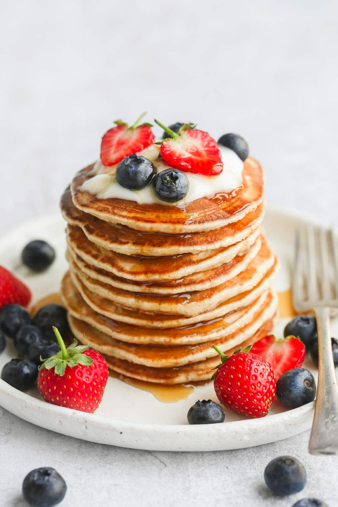

<!DOCTYPE html>
<HTML lang="en"></HTML>
<head>
<link rel="stylesheet" href="style.css">
<nav>

    
        <a href="https://tasty.co/recipe/fluffy-perfect-pancakes"> Recipes</a>
        <a href="https://tasty.co/recipe/fluffy-perfect-pancakes"> About</a>
        <a href="https://tasty.co/recipe/fluffy-perfect-pancakes"> Visit us</a>
        <a href="https://tasty.co/recipe/fluffy-perfect-pancakes">Media</a>
</nav>

    <!--This is to show that my code is a web page of some sorts by having a NAV section-->
    <center>
        <div class="fade-in"><h1> How to Make <div class="search">Pancakes</div></h1>
    
    <h3> How to simplify your mornings with one <i>tasty</i> recipe</h3>
    <strong><q>Best  of the Year</q></strong>
    <p>Bored of your same ol' breakfast? Check out this <a href="https://www.pinterest.co.uk/pin/193936327687456067/">Fluffy Pancake Recipe</a> that the family will love. </p> 
    <figcaption>Pancake from <i>O Magazine</i></figcaption>  </p>
    </center>
    <div class="container">
    <h2><b> Ingredients Needed:</b></h2>
    </div>
    <ul>    
     <li>4 cups Milk</li>
        <li>3 Eggs</li>
        <li>4 Tsp Baking Powder </li>
        <li> 3/4 Cup Butter</li>
        <li> <i><b><mark>Add</mark></b></i> Maple Syrup</li></p>
       <center> <iframe width="560" height="315" src="https://www.youtube.com/embed/FLd00Bx4tOk" title="YouTube video player" frameborder="0" allow="accelerometer; autoplay; clipboard-write; encrypted-media; gyroscope; picture-in-picture" allowfullscreen></iframe> </center>
       <div class="container">
<main>
    <h2> Directions:</h2>
</div>

<div class="finisher">
    <ol>
    <br><li>Whisk together the flour and baking powder in a large bowl.</li>
    <br><li>In a separate bowl, add the butter, milk, and egg yolks, stirring to combine.</li>
    <br><li>Pour the milk mixture into the flour mixture and stir with rubber spatula until just combined. </li>
    <br><li>Heat an 8-inch (20cm) nonstick skillet over low heat. Pour 1 ½ cups of pancake batter <br> into the skillet, smooth out the top, then cover with a lid. Cook until golden brown on the bottom <br>and a toothpick inserted into the center comes out clean, about 20 minutes. Transfer the pancake <br> to a plate and repeat, making 3 more pancakes with the remaining batter.</li>
    <br><li>Serve with maple syrup.</li>
    <br><li> Enjoy!</li></p>
</ol></div>

      
    <br>
    <center><h3><p>Looking for a cooking playlist? We have you covered. Check out our <i>Cookin & Groovin</i> playlist </p> </h3>
    <p><audio controls>
    <source src="audio.mp3">
    </audio></p>
    </main>
    <section>
    <center>
    <br>

    <div class= "closing">
        <p id="visit">Visit The Pancake House for more tasty treats</p>
    
</div>


    <!--this section shows they can be interactive with a link to a survey. Survey is not created but link to button is-->
    <h3><form><button><i>Like the Recipe? Tell us in this quick survey</i></button></form></h3>
    <div class="mill"></section>
 <p>
        ©Emily. Harrison All Rights Reserved
</p>
</div>
<body>
    </body>


    </html>
    </center>
